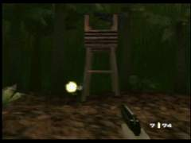
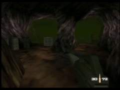

|
| Soluce
Goldeneye : Jungle |
|
| Soluce
Goldeneye : Jungle |
Un Niveau plein de Brume Verte pour faciliter les choses, ben voyons... Ambiance musicale sympathique, toute en ambiance, avec arrivée musicale de Xenia du plus bel effet. Un Niveau sympa, dépaysant. |
| Détruire
les Drone Guns
et Tuer Xenia : Tous Niveaux |
Dès que vous commencez, prenez tout droit, vous tomberez sur le 1er. Cachez-vous derrière un Arbre, et snipez-le tranquillement. Prenez à gauche, et vous tomberez sur le 2eme. Idem, explosez-le. Continuez et vous tomberez sur le 3eme. Ensuite, c'est Xenia. Voilà une technique fastidieuse, car il faut attendre Natalya : Laissez Xenia venir, et Natalya lui mettra un coup de Magnum. Hop, fini pour Xenia ! Sinon, on peut miner le Pont, et la laisser s'exploser dessus. On peut aussi (et c'est le mieux en fait) zoomer au loin et lui prunifier la Tete pendant qu'elle arrive. Net. |



Il reste encore des Drone Guns ! Regardez sur votre Gauche une fois Xenia morte, en voilà un ! Vous arriverez ensuite dans une Caverne. Tout de suite, sortez votre AR33 et zoomez pour choper le Drone Gun tout au fond. Ou alors envoyez un coup de Lance Grenades, c'est sympa aussi... Continuez votre chemin et vous arrivez à une Salle avec une Echelle. On peut exploser un Drone Gun vicieux en montant DOUCEMENT à l'echelle. Dès que vous voyez un millimetre du Drone Gun, paf ! Redescendez de l'Echelle et continuez... Vous arriverez à une Salle avec des Caisses Grises. Liquidez tout le monde, et avancez. Vous arriverez plus loin à l'entrée d'une Salle plus complexe. Sur votre Gauche, y a le 7eme et Dernier Drone Gun... |
| Détruire
l'Entrepot de Munitions
: Secret
Agent / 00 Agent |



| Escorter
Natalya vers la Base de Janus
: Tous
Niveaux |
Sortez votre Grenade Launcher et le RCP-90, va y avoir du Fight. Il faut aller au fond de la Caverne, et des Gardes arrivent à l'infini. Le mieux est encore de tracer, et de prier pour que Natalya soit restée suffisemment en arriere pour ne pas prendre de Plomb dans ses (Charmantes) Ailes. |